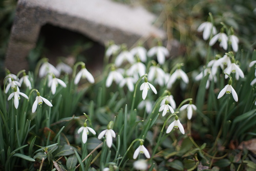
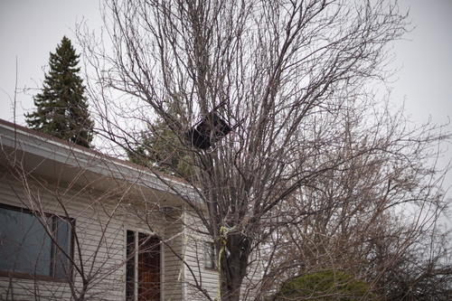
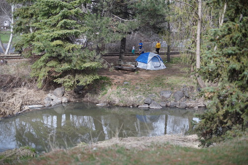
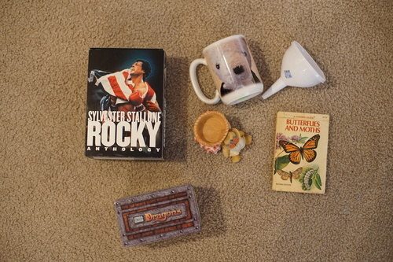
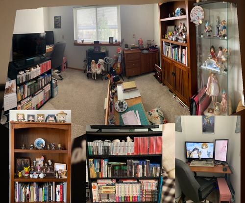

spring is my favorite season to take pictures. its the perfect temp and theres flowers and birds and its just a plain old good time
  this dude who parked his tent in my favorite spot to look at baby fish? f*ck you.
padiddle!
im embarrassed to say we went back to the thrift store and bought more stuff. i really wanted a funnel.
i love that the photo of the bear was taken at such a small distance with a wide angle lens. the curvature of the mug is not helping him either. i am officially out of room for mugs.
mission accomplished.
idk ryan wanted it.
another ryan find
my impulse control for cuties is low im sorry
in color!!!
i took a new room photo. it's been almost a year since my last one. here's a secret link to a larger version. im feeling very insecure about owning ring lights. i promise i am not a streamer of any sort and i own no webcam or microphone
someday we're not going to own music. it seems like the future is headed toward only streaming. my coworkers tell me they dont even own anything that can play a CD! i didnt even ask if they owned a DVD/BD player. eventually everything is going to be at the mercy of the copyright holder and thats honestly not fun.
as far as i've seen, most used CDs dont get too particularly expensive although it can be hard and time consuming to find them for the very nice $1 price. a CD/DVD/BD will always play until it's damaged or rots (or until your PS3 refuses to play any disc because it hasnt been connected to the internet in x months). i hope good music stops being released when we switch over to only streaming.

gadgets that used AA batteries ended up being longer lasting than ones with rechargable batteries. rechargable batteries were so exciting but do any of them last more than an hour anymore? if they even work at all? it's not like you can find replacements for most of them either.
and im just going to add im very mad at myself for losing my GBC battery cover.